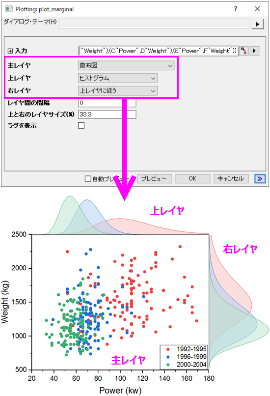

分布投影グラフ（マージナルプロット）
Marginal-Plot
Xファンクションplot_marginalで様々な分布投影グラフを作図できます。このXファンクションを使って、分布投影グラフの全レイヤの設定が可能です。

レイヤの編集
主レイヤ
主レイヤでは4つのグラフタイプから選択できます。
- 散布図
- 選択したXYデータセットを全て散布図として、主レイヤにプロットします。
- 線形回帰付き散布図
- 選択したXYデータセットを全て散布図とし、それぞれの線形フィット線付きで、主レイヤにプロットします。
- このグラフタイプを選択すると、信頼帯と信頼水準の設定項目が利用できるようになり、線形フィット線に関する設定が可能になります。信頼帯は、線形回帰曲線の両側信頼区間を追加でき、信頼水準は、信頼帯の信頼水準を設定するために使用できます。
- カーネル密度塗りつぶし等高線
- このプロットタイプを選択すると、選択したすべてのデータセットが塗りつぶし付きのカーネル密度プロットとしてプロットされます。
- このプロットタイプを選択すると、帯域幅法、密度法、X/Yのグリッドポイント数が表示され、カーネル密度プロットの外観を制御できます。
- カーネル密度等高線
- このプロットタイプを選択すると、選択したすべてのデータセットが、線のみのカーネル密度プロットとしてプロットされます。
- このプロットタイプを選択すると、帯域幅法、密度法、X/Yのグリッドポイント数が表示され、カーネル密度プロットの外観を制御できます。
上レイヤ
- ヒストグラム
- 全Xデータをヒストグラムとして上レイヤにプロットします。複数のXデータセットがある場合は、ヒストグラムを重ねてプロットします。
- 積上げヒストグラム
- 全Xデータを積み上げヒストグラムとして上レイヤにプロットします。
- ボックスチャート
- 全Xデータをボックスチャートとして上レイヤにプロットします。
- バイオリン図
- 全Xデータをバイオリン図として上レイヤにプロットします。
- 分布曲線
- 全Xデータを分布曲線として上レイヤにプロットします。
- 塗りつぶし付き分布曲線
- 全Xデータを塗りつぶし付き分布曲線として上レイヤにプロットします。
- 曲線付きヒストグラム
- 全Xデータを分布曲線付きヒストグラムとして上レイヤにプロットします。複数のXデータセットがある場合は、隣に並べてヒストグラムをプロットします。
右レイヤ
右レイヤについては、上レイヤの設定と同じにするか、サポートされている以下の7つのグラフタイプのいずれかを個別に選択できます。
- ヒストグラム
- 積上げヒストグラム
- ボックスチャート
- バイオリン図
- 分布曲線
- 塗りつぶし付き分布曲線
- 曲線付きヒストグラム
レイヤ間の間隔
上/右レイヤと主レイヤとの間隔を調整します。上レイヤの場合は主レイヤの高さの割合(%)で間隔が設定されます。右レイヤの場合は、主レイヤの幅の割合(%)で間隔が設定されます。
上と右のレイヤサイズ(%)
上と右のレイヤサイズを調整します。上と右のレイヤは、主レイヤの幅と高さにリンクしているので、主レイヤの幅と高さの割合(%)で調整します。
ラグを表示
主レイヤの軸のラグを表示するかを指定します。ラグは主レイヤと上/右レイヤの間に表示されます。